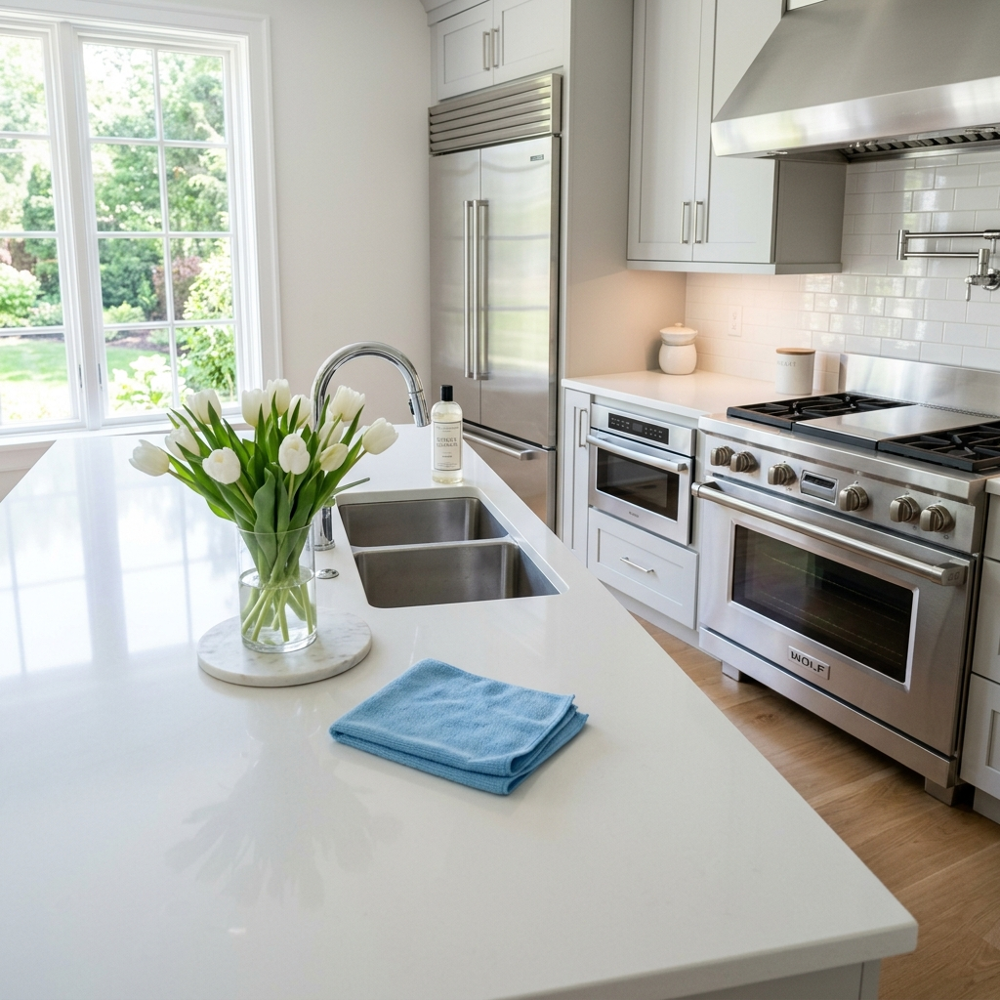
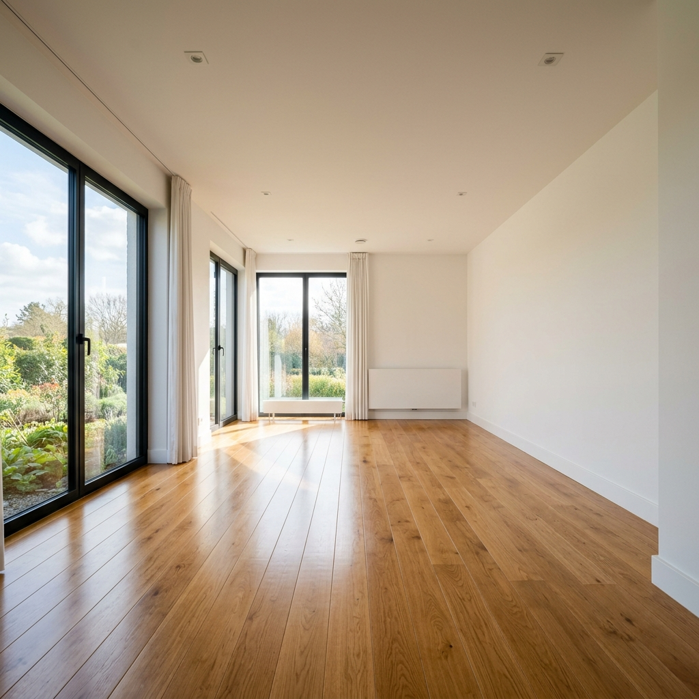

Top-rated house cleaning and recurring maid services. Trusted and top-rated in Islip, NY. Background-checked, fully insured, and 5-star rated.
Serving Islip • Brightwaters • Islip • West Islip • Babylon
Welcome to Anabel Cleaning Service Corp — a trusted provider of professional house cleaning and commercial cleaning services in Islip, New York. Our experienced specialists deliver high-quality results for homes, offices, and businesses across Suffolk County. We emphasize eco-friendly products, safe for your family and pets.
SATISFIED CUSTOMERS
COST BENEFIT
PUNCTUAL APPOINTMENTS

Get professional cleaning services for your residential or commercial space at affordable rates. Trustworthy, reliable, and comprehensive solutions.
Detailed residential cleaning in Islip, NY. Deep cleaning, recurring maid service, and specialty detailing.
Learn More
Moving can be stressful — but cleaning doesn't have to be. Spotless transitions for new homeowners or rental security deposits.
Learn MoreRemove all construction dust, debris, and residue. Prepare newly built or remodeled spaces for move-in.
Learn MoreAt Anabel Cleaning Service Corp, we provide reliable and detailed residential cleaning services. Our goal is to help you maintain a spotless, healthy, and comfortable home — so you can spend more time enjoying what matters most.
Moving can be stressful — but cleaning doesn't have to be. We specialize in thorough and dependable move-in and move-out cleaning services, designed to make your transition smooth, easy, and worry-free.
After construction or renovation, your space deserves a spotless finish. We specialize in professional post-construction cleaning services, helping homeowners, contractors, and property managers prepare newly built or remodeled spaces for move-in or presentation.
Keep your home spotless and stress-free. Our experienced cleaning team delivers top-quality results using safe, eco-friendly products. We offer fully customized cleaning plans to fit your schedule, lifestyle, and needs — whether it's a one-time deep clean or recurring maintenance.
A clean workspace means a more productive, professional, and healthy environment for your team and clients. We provide reliable and detailed office cleaning services, designed to keep your business spotless and running smoothly.
When your home or office needs more than a surface clean, trust Anabel Cleaning Service Corp. Our expert cleaning team goes beyond the basics — reaching every corner, surface, and hidden area to remove dust, grime, and buildup for a truly spotless space.
Anabel Cleaning Service Corp proudly brings our meticulous touch to Suffolk County, Nassau County, and surrounding areas. We are your local, trusted cleaning experts.
Anabel Cleaning Service Corp offers a full range of house cleaning in Islip, NY — including house cleaning, deep cleaning, move-in/move-out cleaning, post-construction cleaning, office & commercial cleaning, and flexible recurring residential cleaning. We proudly serve Islip, Islip, Brightwaters, West Islip, Babylon, and all of Suffolk County.
Pricing for house cleaning in Islip, NY depends on the size of your home or office, the type of clean, and how often you need service. We offer 100% free, no-obligation estimates. Call (631) 624-8200 or fill out our online form to get your custom quote today.
Yes — Anabel Cleaning Service Corp is fully licensed and insured in New York State. Every team member is thoroughly background-checked, professionally trained, and bound by confidentiality agreements. Your home, belongings, and peace of mind are 100% protected every visit.
We do our absolute best to accommodate last-minute, same-day, and next-day cleaning requests in Islip and throughout Suffolk County. Call us directly at (631) 624-8200 to check real-time availability — we're here for you when you need us.
In addition to Islip, NY, we provide cleaning services throughout Long Island — including Brightwaters, Islip, West Islip, Babylon, Brentwood, Central Islip, and Nassau County. Anabel Cleaning Service Corp is Suffolk County's trusted local cleaning specialist.
Yes. We arrive fully equipped with eco-friendly, non-toxic cleaning products that are safe for children, pets, and the environment. Our HEPA-filtration vacuums eliminate allergens and our green solutions deep-clean without harmful chemicals — the healthy choice for your Islip home.
Absolutely. We offer flexible recurring cleaning plans in Islip, NY — weekly, bi-weekly, and monthly options available. Recurring clients enjoy priority scheduling, consistent dedicated teams, and reliable pricing. Contact us today to set up your regular cleaning schedule.
Fill out the form below and we'll get back to you with a free, no-obligation quote. Or call us directly at (631) 624-8200